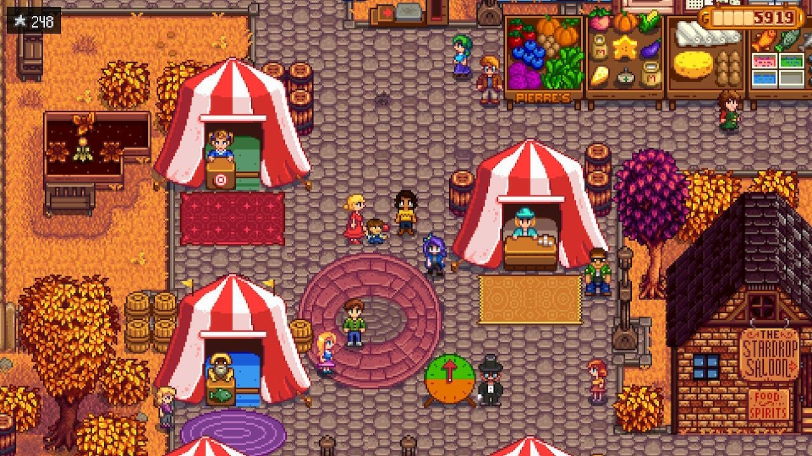
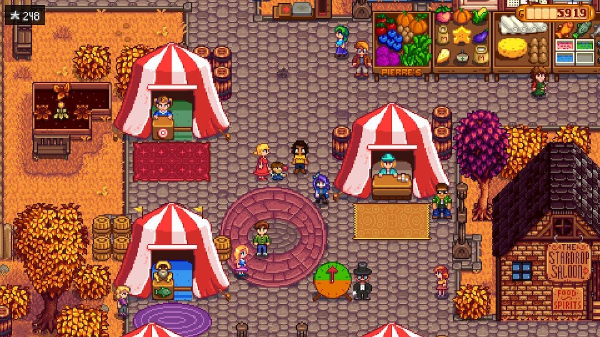
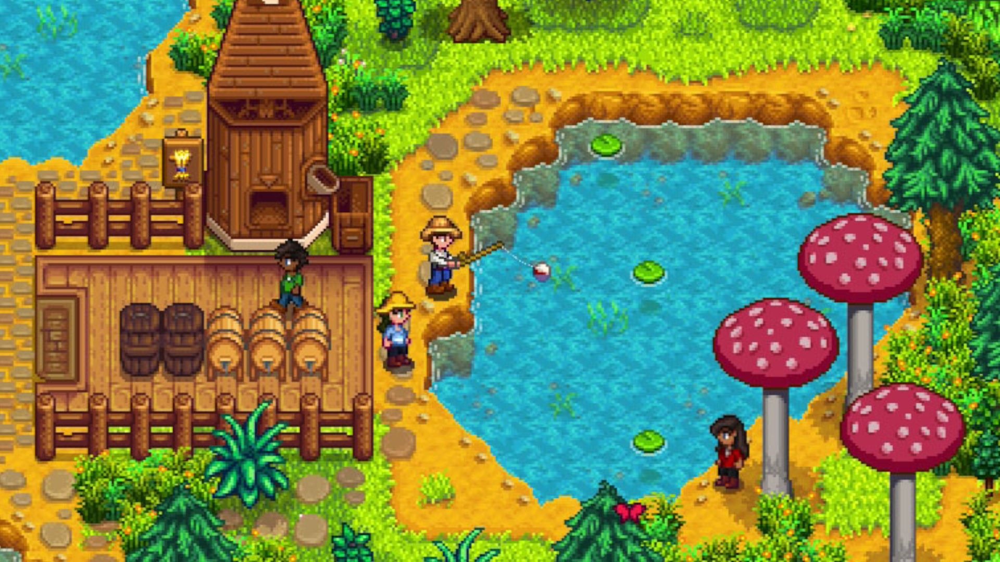
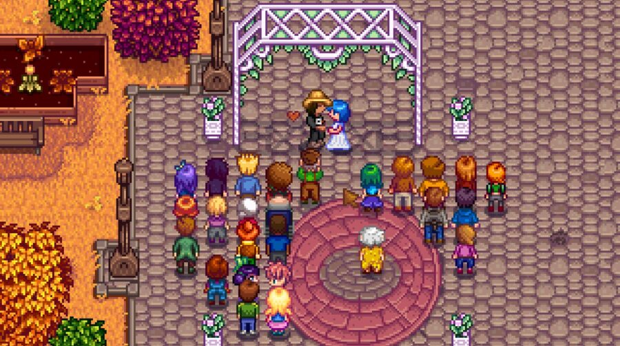
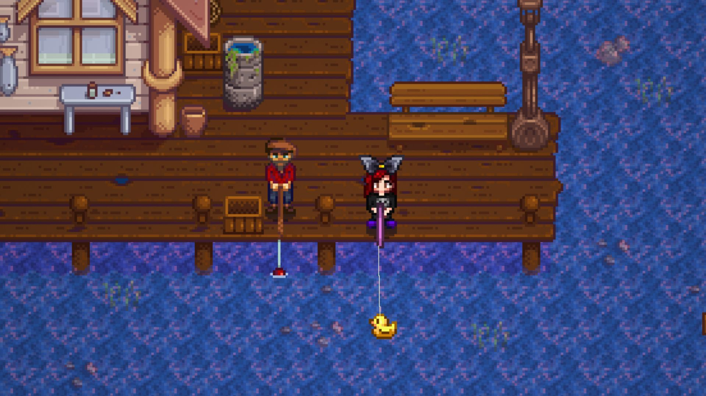
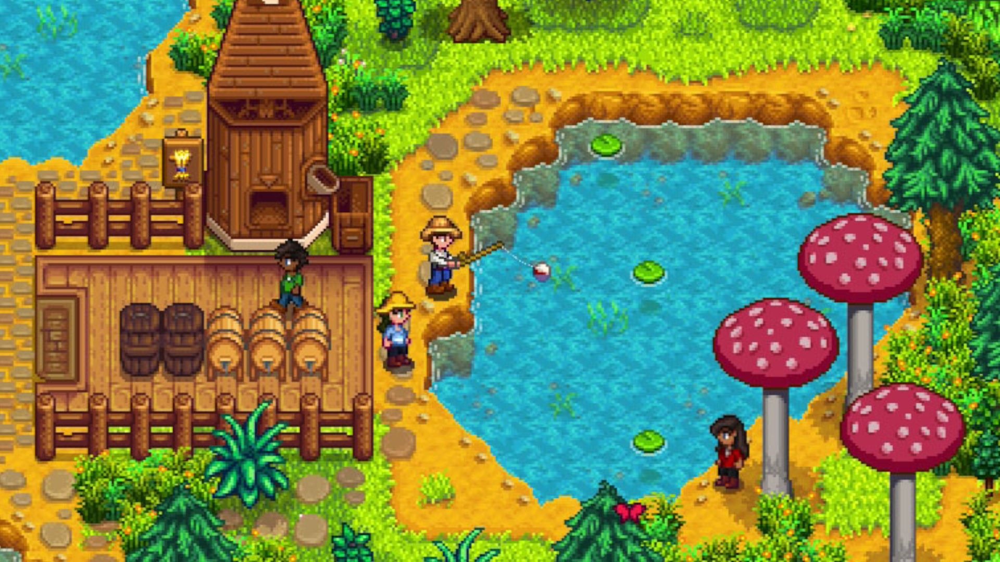
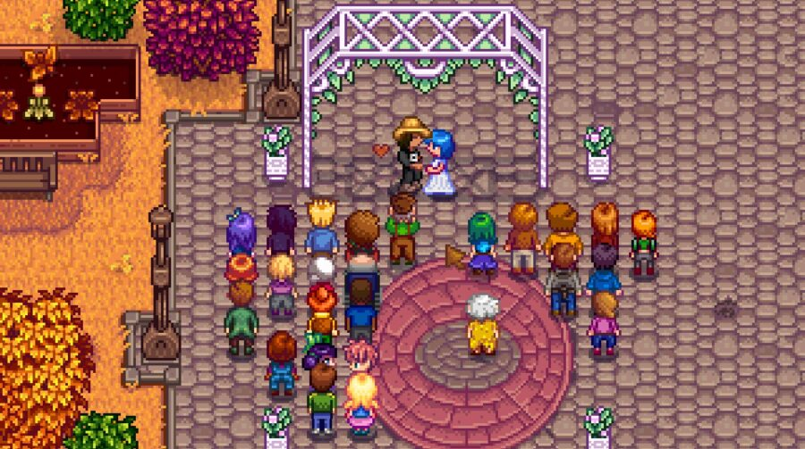
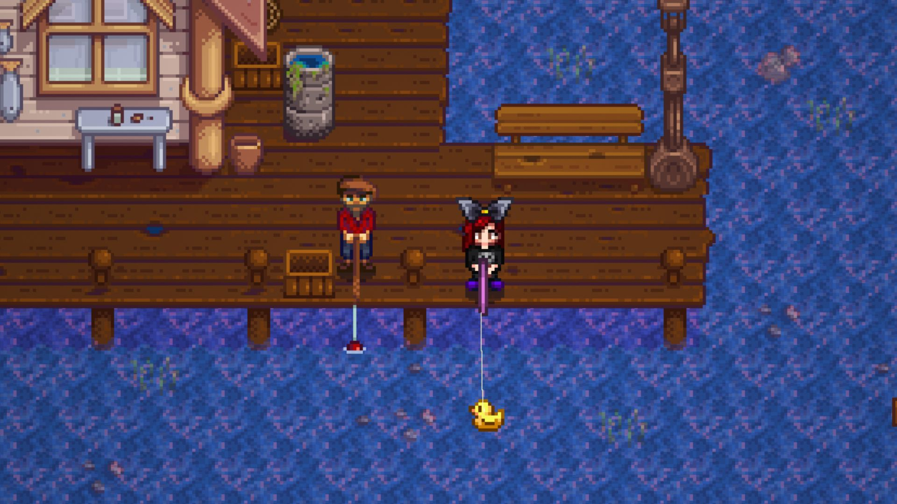

Sobre o jogo
Stardew Valley é um RPG sem fim da vida no campo! Você herdou a antiga fazenda de seu avô no Vale do Orvalho. Equipado com ferramentas de segunda mão e algumas moedas, você irá começar sua nova vida. Será que você consegue aprender a viver da terra e transformar esses campos absurdamente vegetados em uma casa próspera? Não vai ser fácil. Desde que Corporação Joja veio à cidade, os antigos modos de vida quase desapareceram. O Centro Comunitário, uma vez o lugar mais visitado da cidade, agora está em ruínas. Mas o vale parece cheio de oportunidades. Com um pouco de dedicação, você pode ser a pessoa que restaurará a grandeza do Vale do Orvalho!
Galeria
Fotos in-game que capturam a essência de Stardew Valley perfeitamente!
 

 





Trailer
Download
Se interessou em viver uma vida pacata e emocionante no campo? Faça o Download de Stardew Valley em alguma das lojas abaixo!
Stardew Valley na Steam Stardew Valley na Play Store